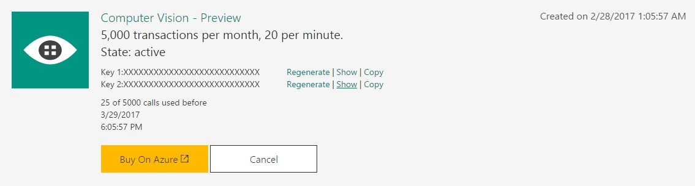

Microsoft's Computer Vision API utilizes advanced algorithms to analyze images and return information about the image back to the developer. The API can be utilized to identify and categorize images, detect human faces, tag images based on content, as well as a variety of other functions. To find out more about the API, go to their API page.
The first step in using the Computer Vision API is creating a subscription key with Microsoft. A subscription key lets the server we're calling know who's calling the server. This lets the provider (in this case, Microsoft) limit abuse of the system by limiting the number of calls, or the frequency of calls. For example, Microsoft provides free keys up to 5,000 calls per month at no charge, with activation within 10 minutes. The way Microsoft tracks the number of calls per month is by your subscription key. Luckily, it's easy to sign up for a free key with Microsoft. To sign up for a subscription key, go to their sign-up page and create an account.
After you create an account, click on Subscriptions and request a new trial for Computer Vision - Preview. You'll be given 2 subscription keys - both a collection of numbers and letters. We will use these keys later in a POST request to call the Computer Vision API. But for now, just keep them saved somewhere. You can also look up the key values under the 'Free Trials' section if you can't find them. In case the key gets compromised, you can regenerate a key as well. Finally, you can see how many calls to the server you've made on your account for that month.
Once you've created an account and requested a subscription key, you're ready to start messing around with the API and making your own calls. This guide will teach you how to analyze images using AJAX and a XMLHttpRequest object, how to read the response you recieve in JSON format, how to change the parameters to call other API functions, and finally an implementation example to apply what we've learned to gathering real data.